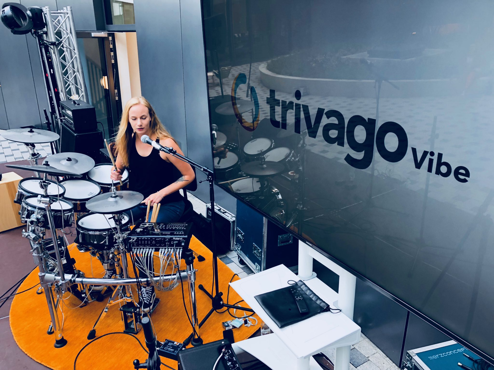
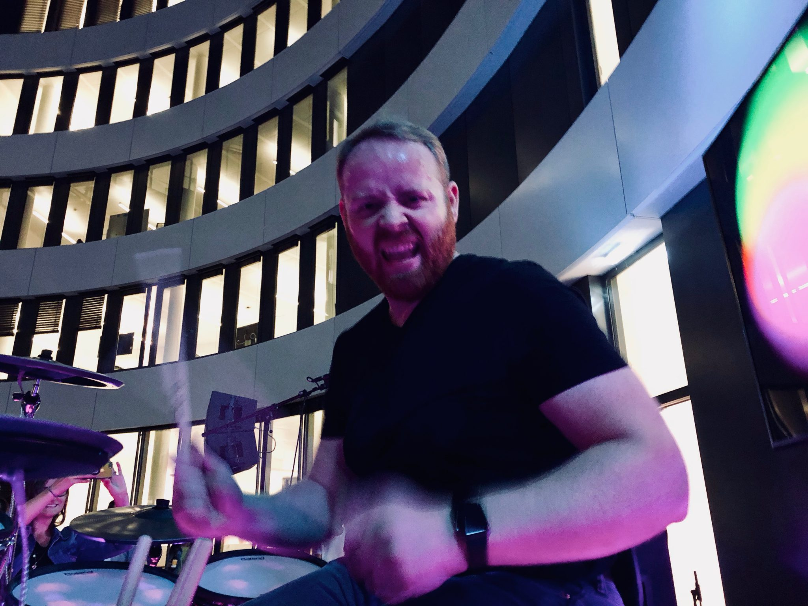
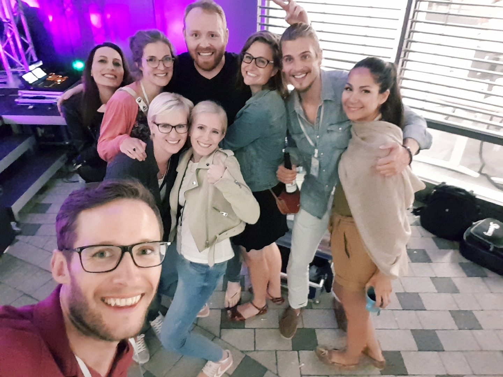

DRUMSON performs live at the trivagoVibe in Düsseldorf

I love working at trivago! The company embodies many of my core passions: technology and innovation, travel, multiculturalism, and on occasion, music! The trivagoVibe is a bi-annual concert of trivago’s musically-talented employees and is the activity where I have the most fun at work (and yes, that includes the famed trivago on Tour annual trip. Nothing beats live music in my book!) And at trivago, live music means trivagoVibe!
trivago recently moved into a new spaceship-like campus in Düsseldorf, which is an incredible facility in every way, including lots of open-air spaces which are perfect for music. During the past trivagoVibes, I didn’t have the opportunity to perform and so this time I was as proactive as possible to make sure that I would be included in the lineup. I couldn’t be more satisfied with the outcomes.
The lineup of musicians was incredibly impressive. With a range of genres from singer-songwriter, blues, country, rock, and dance music, there was something for everyone.
How e-Drums Changed Everything
A few years back while I was traveling across India, I had an identity crisis. I came to understand that if I wanted to continue saying, “I am a drummer,” instead of, “I was a drummer,” then I better start drumming more regularly. My nomadic and apartment-dwelling lifestyle was not conducive to such loud and bulky habits. One night, while laying in bed, I was watching drumming YouTube videos when I came across a Drumeo video featuring Michael Schack, Roland’s endorsed artist for their flagship e-drums. I was hooked, and 10-minutes later, I was typing my credit card into eBay where I found a great deal on a Roland TD-30KV drum set.
In the past years, I have enjoyed coming home to my 1-bedroom apartment and jamming under the headphones late into the night without disturbing my neighbors. I even did a few studio recordings with the drums (they sound even better than ‘real’ drums on recordings) but never dared to dream of using them for a live performance; I am too much of an acoustic-purist to play e-drums live!
But here I am in Germany, no gigs played in the two years since I moved here, no bands to play with, and yet there is an opportunity at work where I could perform. But perform with who?? Sure, I talked to some other musicians, but I think they shared my view on acoustic drums being the only proper drums for a band. And so I was left without buddies to jam with. One day I decided, “Judson, you can do this alone. After all, Michael Schack can do it, so why can’t you?” And so that is what I set out to do: a one-man band drumming extravaganza.
Now things are about to get interesting!
Soundcheck is for Sharing
On the week of the show, I show up to my spaceship-esque office with my spaceship-esque drums, and not even I really know what to make of it. I have never hooked this Roland kit up to external speakers before, and though I have no doubts of its capabilities, I also wasn’t sure what sort of unforeseeable technical difficulties I could run in to.
When the time for soundcheck came, another drummer got to the stage first with her acoustic drums, so we got those setup. But that is when things got interesting. The acoustics of the venue were really terrible. There was an echo that went on for minutes. We had a big fear of how to control the sound of live drums. After a brief attempt at a soundcheck, it already seemed like a bad idea.
Then came the question:
-
Them: Judson, can we use your drums for all the bands tonight?
-
Me: hmmmmmm… well, yes, of course, but are you sure that is a good idea?
-
Them: Well let’s just give it a try
-
Me: Ok!
And so we set up the Roland drums for soundcheck. When all was set, I got behind the drums, and with one beat into the kick drum >BOOM< we all knew we struck gold. This. Drum set. Sounds. AMAZING. Live! Thusly, the rest of the night had amazing sounding rhythm which was super easy to mix into the volume of everyone else on stage.
 Janine (Avocadogate) sound checks on the Roland TD-30KV
Musical Talent of trivago: The Lineup
I am just blown away at the level of musical talent that exists in this company. Not to mention the courage it takes to play music in front of all your colleagues. The concert featured 8 acts: 6 bands, a DJ, and me. Here are some highlight photos from the evening.
[gallery columns=”4” link=”file” size=”medium” ids=”19214,19189,19190,19191,19206,19192,19195,19196”]
I didn’t get much video of the other bands, but be sure to check out this awesome video of Josito & the Kids performing Daft Punk’s Get Lucky. These guys are amazing!
My first stage performance in years
Then, late in the evening, after everyone was good and loosened up, having just listened to hours of amazing live music, my moment of truth came. It was time for me to hit the stage for the first time in Germany, and if I am being completely honest, this was my first true live performance since… I honestly can’t remember! (Seriously, I am sitting here trying to remember, and I just don’t remember..)
Drummers typically sit in the back of the stage, behind the rest of the band. That is not an excuse to lack showmanship, but now my drums were pushed to the front edge of the stage and I was up here all alone. It was time for me to shine or sink. The crowd was full of energy, and it was my responsibility to keep them entertained. Did I rehearse enough? Did I program the right drum sounds? Does the backing track work? Will the video backdrop work? These are all the questions which were in my head. But I was focused. I was prepared. I rehearsed, and now it was time to see if I still have what it takes.
As I walked onto the stage, I slipped into character. For the next 32 minutes, I would be: DRUMSON.
**Update:** Checkout the official website for Drumson at [https://drumson.de](https://drumson.de)!
 Drumson performs a solo show at the 2018 trivagoVibe
Watch Video Footage from my First DRUMSON Performance
In all the years that I have played drums, I have no videos from a live performance, and I hardly have any photos. I certainly have no quality photos. Therefore, I asked a few friends to take some videos of my performance. The results were really amazing! Many people sent me videos and I was able to splice together this video recap of the show.
Please excuse the unstable audio level, I think the phones had a difficult time keeping up with how loud the show was!
Enjoy! (and please leave me your feedback in the comments section of this post!) :)
[embed]https://www.youtube.com/watch?v=U8XFiPi4TO4[/embed]
Thank you to everyone who came out to support the music!
Thank you to all the other musicians, my friends, my colleagues, and especially to trivago for making this special night a reality, not just for me, but for everyone involved. The trivagoVibe happens twice a year and I hope that I will be able to perform at the next one.
Until then, please leave me your thoughts in the comments below, and you can always reach me directly on Facebook and Twitter!
